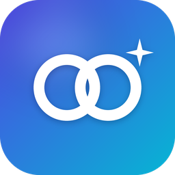
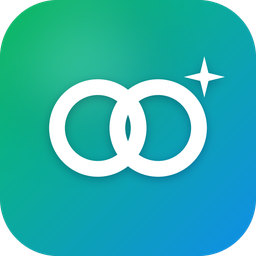

只重画变了的那块
布局缓存 + setData 增量失效，滚动只合成、不重画；最慢一帧而不是平均帧率才是判据。

灵犀布局缓存 + setData 增量失效，滚动只合成、不重画；最慢一帧而不是平均帧率才是判据。
事件冒泡 / catch、position:fixed、按压态、picker、Modal、页面栈与生命周期，与微信行为逐项对照。
低端机走 CPU 参考实现，高端机自动用 GPU；GPU 初始化失败、丢上下文一律回退，不黑屏。
视频、地图等原生组件画进页面里，滑动时贴着页面走，不再「盖在上面一顿一顿」。
服务端上传、App 内搜索 / 下载 / 自动更新；外部链接与 wx.navigateToMiniProgram 互相跳转。
图片预览双指缩放、双击放大；全屏视频竖屏进入、跟着手机横竖旋转。
Flutter 插件 mini_render 的完整示例：微信式下拉小程序面板、最近使用 / 我的小程序、长按收藏与删除、胶囊「•••」底部菜单、小程序商店。

只用 Android 框架自带的类（不依赖 AndroidX）：一个 MiniProgramView 就是一个小程序。同一套商店、面板与菜单。
数据都来自演示接口：电影、音乐、图库的列表分页、详情、图片与试听音频；跳转中心演示小程序之间互相打开。
Android 8.0 以上、arm64 手机。下载后在浏览器里点开安装（首次需要允许「安装未知应用」）。
正在读取版本信息…
校验：下载后可对照 SHA-256。演示包用调试签名，仅供体验。